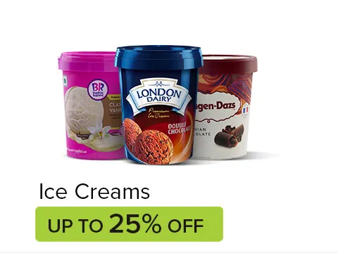
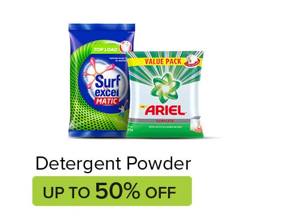
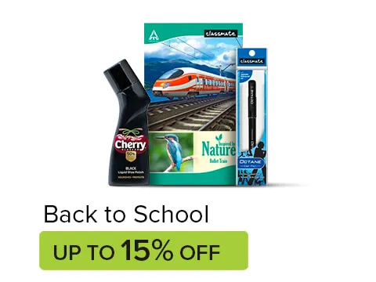

MRP:
Rs 198
Price:
Rs 170
You Save:
14%
Fortune Sunlite Oil is refined sunflower oil that is healthy and tasty. Its high boiling point implies that sunflower oil holds onto its nutritional content even at higher ...
Price: ₹ 331.00 (₹ 33.10 / kg)
Aashirvaad prides itself in making 100% pure whole wheat atta with all its natural dietary fibres intact which ensures that you and your family receive optimum ...
Price: ₹ 242.00 (₹ 48.40 / 100 ml)
Lifebuoy Antibacterial Hand Sanitizer has over 60% alcohol content and gives you instant germ protection · Lifebuoy Antibacterial Hand Sanitizer kills 99.9% ...
Price: ₹ 80.00 (₹ 27.59 / 100 g)
Product description. Introducing the MAGGI NUTRI-LICIOUS Masala Veg Atta Noodles with appetizing aroma and delicious masala taste made using 20 Spices & ...
One stop shop for all your daily needs Growno is a low-price online supermarket that allows you to order products across categories like grocery, vegetables, beauty & wellness, household care, baby care, pet care and meats & seafood and gets them delivered to your doorstep.


